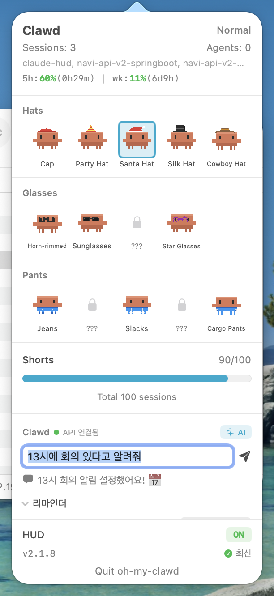
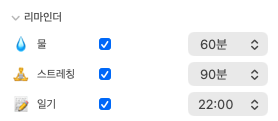
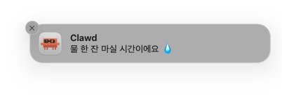

clawd has infiltrated my computer
Installation
Download DMG (Recommended)
Download the latest DMG from GitHub Releases, open it, and drag OhMyClawd.app to your Applications folder.
Manual Install
git clone https://github.com/Hoya324/oh-my-clawd.git
cd oh-my-clawd# Install HUD status line
./install.sh
# Install oh-my-clawd menu bar app
./pet/install.shQuick Start
- Download — Get the latest DMG from GitHub Releases
- Install — Drag OhMyClawd.app to Applications
- Launch — Open the app and check your menu bar
Clawd System
Clawd lives in the macOS menu bar and reacts to Claude Code activity across all sessions.
Clawd States
| State | Trigger | Behavior |
|---|---|---|
| Sleeping... | No active sessions | Zzz animation, eyes closed |
| Waking up! | Transition from idle | Jumping awake animation |
| Walking happily | Default active state | Idle walk cycle |
| Working hard! | 50+ tool calls | Fast movement, sweat drops |
| Context is full... | Context >= 70% | Puffed up, slow movement |
| Rate limit warning! | Rate limit >= 80% | Shaking, alert icon |
| Getting tired... | Session >= 45 min | Droopy eyes, yawning |
| Working together! | 2+ agents | Multi-agent animation |
Activity Levels
Clawd's activity level changes based on concurrent agent count.
| Level | Condition | Effect |
|---|---|---|
| Normal | 0-1 agents | Default appearance |
| Glowing | 2-3 agents | Glowing light effect |
| Supercharged! | 4+ agents | Maximum energy, full glow |
HUD Status Line
A real-time status line showing Claude Code metrics.
HUD Format
[HUD] | 5h:14%(3h51m) | wk:62%(3d5h) | session:29m | ctx:39% | 53 | agents:2 | opus-4-6| Segment | Description | Color Logic |
|---|---|---|
5h:14% |
5-hour rate limit usage | Green < 70%, Yellow < 90%, Red ≥ 90% |
(3h51m) |
Time until 5h limit resets | Dim |
wk:62% |
Weekly rate limit usage | Same as above |
session:29m |
Current session duration | Green < 30m, Yellow < 60m, Red ≥ 60m |
ctx:39% |
Context window usage | Green < 70%, Yellow < 85%, Red ≥ 85% |
53 |
Total tool calls in session | Static |
agents:2 |
Currently running agents | Cyan |
| Model | Active model name | Dim |
Accessory Collection
9 collectible accessories, each with unique unlock conditions.
| Accessory | Unlock Condition |
|---|---|
| Cap | 10 sessions |
| Party Hat | 5 hours total usage |
| Santa Hat | 500K tokens used |
| Silk Hat | 50 agent runs |
| Cowboy Hat | 30 hours total usage |
| Horn-rimmed | 3+ concurrent sessions |
| Sunglasses | 10 rate limit hits |
| Round Glasses | 20 long sessions (45m+) |
| Star Glasses | 10 hours on Opus |
Configuration
The HUD status line can be toggled on or off via the install.sh script. Run ./install.sh to enable or ./uninstall.sh to disable the HUD.
Accessory selection is available through the app popover. Click the Clawd icon in the menu bar to open the popover, then choose the active accessory from the collection grid.
Companion
Clawd doubles as a lightweight daily assistant powered by Claude Haiku. Type naturally in the popover and Clawd parses time, saves memos, toggles reminders, or just chats back.

Supported intents:
3시에 회의 있다고 알려줘→ memo withdueAt: 15:00; native notification at 3pm.오늘 뭐 기억해둔 거 있어?→ lists open memos in the reply, no memo created.스트레칭 알림 2시간마다→ flips the stretch reminder interval in place.오늘 날씨 어때?→ answered via Claude's built-in WebFetch / WebSearch.
Three built-in habit reminders (water, stretch, diary) fire macOS native notifications. Water and stretch only fire while a Claude session is active.


Memo-only mode (no AI)
Tap the ✨ AI pill in the Clawd header to flip it to ✏️ 메모. In this mode whatever you type is saved as a raw memo instantly — no LLM round-trip, no network, zero tokens. Flip back anytime.
- AI mode: natural-language time parsing, reminders, chat.
- Memo mode: fast capture for short notes you don't need parsed.
How it runs
Clawd calls the Anthropic API directly with your Claude Code OAuth token (read from the macOS keychain). Round-trip is 0.5–2 seconds and it counts against your Claude subscription rate limit — no separate API-plan billing. A local claude CLI subprocess is used as a fallback.
Update
The app auto-installs updates in place. Click "설치" in the popover footer and Clawd downloads the latest DMG, replaces itself, and relaunches.
A few seconds after each launch Clawd checks GitHub for a newer release. If one exists, the footer shows v<current> → v<new> 설치. Click 최신 to manually re-check. The raw DMG is always available on the
GitHub Releases
page.